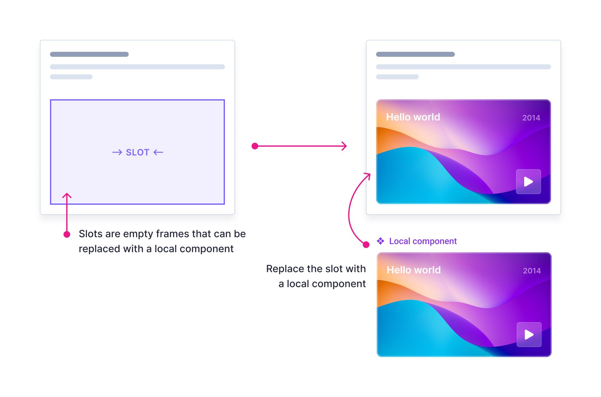

A design system is a set of standards to manage design at scale by reducing redundancy while creating a shared language and visual consistency across different pages and channels.
Design process can be slow, painful, and unproductive. Creating a design system from scratch can be met with dismissal and skepticism, but the value added greatly overshadows the price. Some benefits of creating a design system include:
There are some potential hurdles and limitations which may prevent a design team from using a design system
The foundation of a design system contain specific implementation guidelines, visual references, and design principles for creating interfaces or other design deliverables.
Common foundation documents guides:
Good design is assured by both the quantitative and the qualitative way of answering questions. Measuring usability helps validate our solutions and display any pain points that the user could have. Here are some of the insights that were discovered during the usability testing phase.
A few notable examples would be:
Slots are placeholder components in Figma. They are intentionally empty so that they can be replaced with a local component. Slots provide flexibility to create new designs within global component structure.
They can function as a bridge between local and some global components. Using the technique allows us to import global components into a file and then insert local UI within them without detaching.
Blocks are visual components that can be stacked and arranged to create layouts. Some benefits of using blocks are: